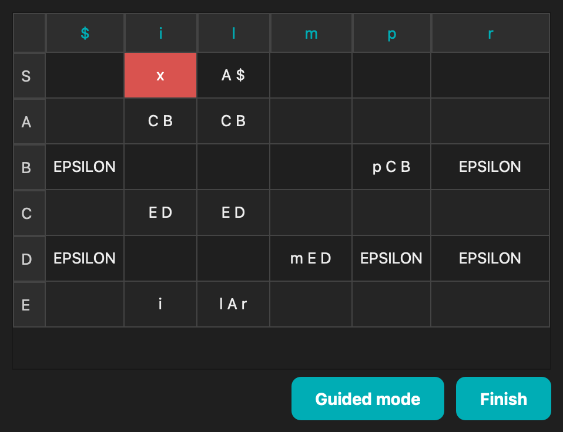
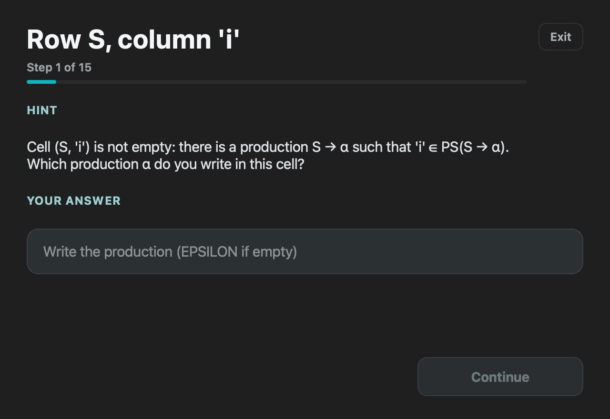
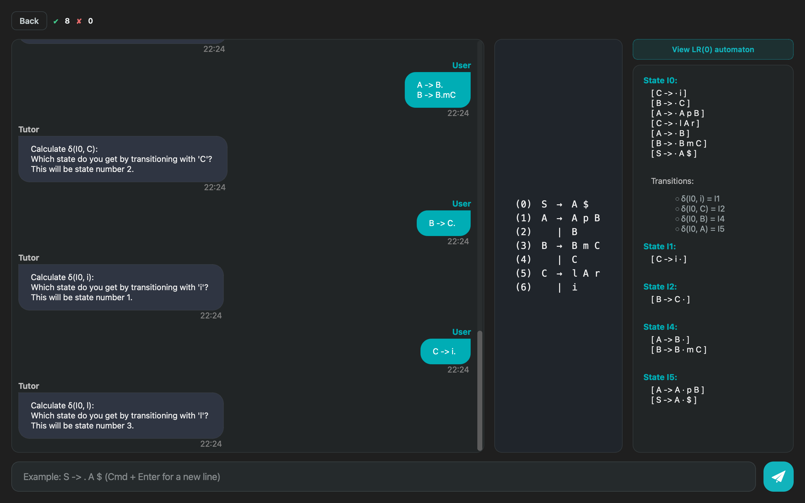
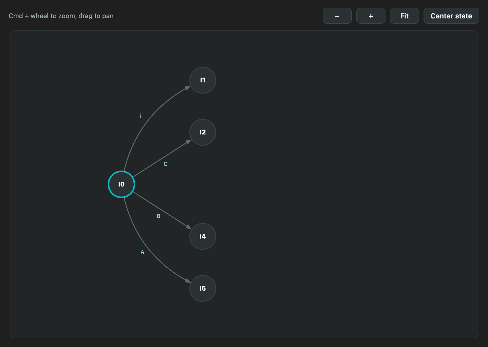
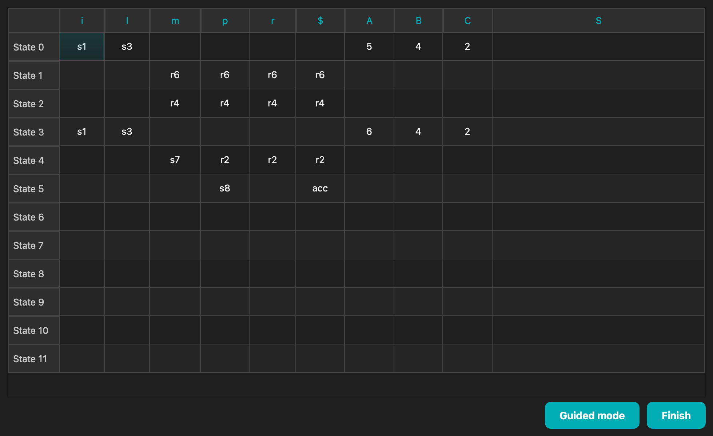
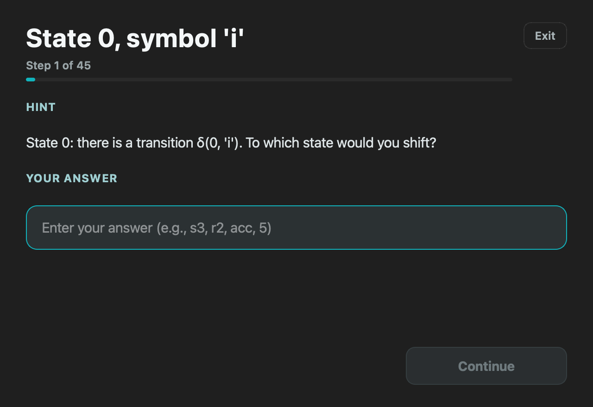
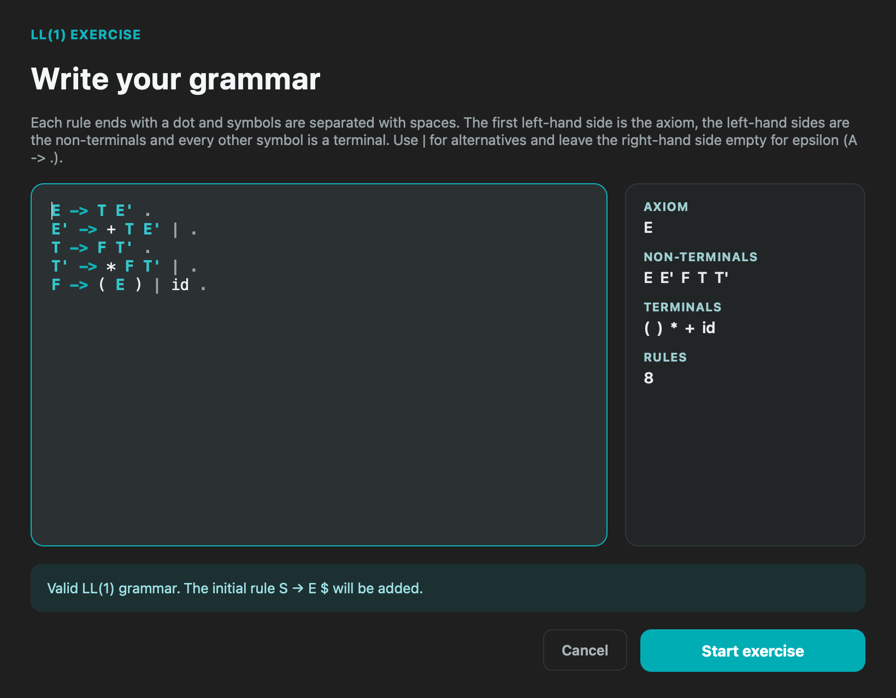

SyntaxTutor: An Interactive Tool for Learning Syntax Analysis
SyntaxTutor is an educational application designed to help compiler students understand LL(1) and SLR(1) parsing algorithms. Through a visual and interactive interface, it guides users step-by-step through the computation of FIRST, FOLLOW, CLOSURE, GOTO, predictive parsing tables, and LR automata, offering real-time pedagogical feedback.
Rather than acting as a mere calculator, SyntaxTutor functions as a learning companion. It explains the reasoning behind each step, highlights common mistakes, and encourages students to engage with the theory behind the algorithms.
🎓 About the Project
SyntaxTutor 1.x was the Final Degree Project "Interactive Tutorial About Syntax Analyzers" (2025). Version 2 is a later extension and redesign, developed independently of that project.
🎯 Key Features
- Educational focus: built to teach, not just compute. Wrong answers branch into smaller questions instead of revealing the result.
- LL(1) and SLR(1) tutors: FIRST, FOLLOW and prediction symbols; LR(0) items, closures, transitions and the parsing tables.
- Your own grammars: type any grammar, with live validation, or practise with generated ones at three difficulty levels.
- Exam mode: no feedback during the exercise and a 0-10 grade with a full question-by-question review.
- LR(0) automaton: drawn progressively as you build the states.
- Guided table modes: fill in the LL(1) and SLR(1) tables one cell at a time, with hints.
- PDF export of the conversation, sets, automaton states, tables and exam reports.
- Spanish and English, adjustable text size and gamified progress.
📖 User Manual
🖼️ Interface Screenshots
🏠 Home
Pick a tutor, the difficulty, your own grammar or exam mode.
📘 LL(1) Tutor
The tutor asks one question at a time; a wrong answer leads to smaller questions about FIRST and FOLLOW.

LL(1) table with a wrong cell
The LL(1) table, with the wrong cells highlighted after a submission.

LL(1) guided mode
Guided mode walks through the table one cell at a time.
🧠 SLR(1) Tutor

SLR(1) tutor
Building the LR(0) collection: items, symbols after the dot and transitions.

LR(0) automaton
The LR(0) automaton grows as you compute each state and transition.

SLR(1) table
The SLR(1) parsing table, with sN, rN, acc and goto entries.

SLR(1) guided mode
Guided mode for the SLR(1) table.
✍️ Your Own Grammar

Grammar editor
The editor checks the grammar as you type and only accepts LL(1) or SLR(1) grammars, depending on the tutor.
📝 Exam Mode
At the end of an exam: the grade and a review of every answer, exportable to PDF.
🛠️ Technologies Used
- C++: efficient implementation of parsing algorithms
- Qt6: modern, cross-platform graphical user interface.
- Modular architecture: clean separation between logic and UI, designed for easy extensibility.
📦 Downloads
Precompiled builds of SyntaxTutor are available in the Releases tab:
- 🐧 Linux: executable AppImage (Ubuntu 22.04, Debian 12 or newer). It runs on X11, and on Wayland desktops through XWayland; to run it natively on Wayland, start it with QT_QPA_PLATFORM=wayland ./SyntaxTutor-<version>-x86_64.AppImage
- 🪟 Windows: ZIP archive with the .exe
- 🍎 macOS: .app bundle for Apple Silicon (ARM)
- Warning
- The Windows and macOS versions are not digitally signed. Your operating system may display a warning when running the application. You can bypass it manually if you trust the source.
🛠️ Building from Source
To build SyntaxTutor from source, you need:
- Qt6 (including qmake6 and the Qt SVG module)
- A C++20-compliant compiler (GCC 11 or newer works)
- GoogleTest, only to run the backend tests
With GNU make, the repository's GNUmakefile builds out of tree:
make app # the application, in build/app
make check # backend and GUI tests
To use qmake directly instead, pass -f Makefile: in the repository root GNU make would otherwise pick up the GNUmakefile above.
📚 Documentation
Full documentation for the source code is available via Doxygen:
The documentation includes:
- Detailed class and function reference
- Graphs of dependencies and inheritance
- Descriptions of parsing algorithms and internal logic
To regenerate it locally, install Doxygen and run:
This will update the contents of the docs/ folder with both HTML and LaTeX output.